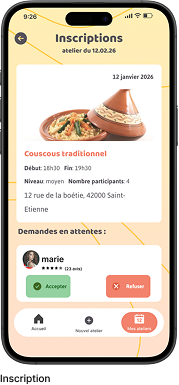
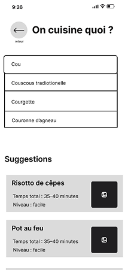
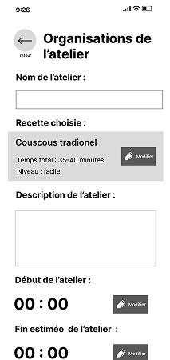
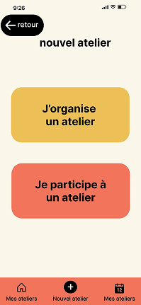
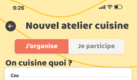

Sommaire
Contexte
En France, près de quatre millions de personnes de plus de 60 ans vivent seules et peinent à manger sainement. L’isolement, la perte de mobilité et le manque de moyens compliquent les courses et la cuisine, au détriment de leur santé et de leur bien-être.
Quand ?
Au quotidien, chaque jour, au moment des repas.
Ou ?
Sur l’ensemble du territoire français, aussi bien en milieu urbain que rural.
Qui ?
Près de quatre millions de personnes âgées de plus de 60 ans,
vivant seules et confrontées à des difficultés pour maintenir
une alimentation saine et équilibrée.
Pourquoi ?
Parce que l’isolement, la perte de mobilité et
le manque de moyens rendent les courses et la cuisine difficiles,
ce qui nuit à leur santé et à leur bien-être.

Problématique
Comment redonner à Simone l’envie de cuisiner chaque jour
pour rompre l’isolement et retrouver le plaisir de partager un repas ?
L'Idée
Une application qui motive Simone à cuisiner en lui permettant de proposer
des ateliers cuisine et de partager ce moment avec de nouvel personnes.





Retour test utilisateur
De manière générale, les utilisateurs ont trouvé l’application plutôt intuitive.
En revanche, certaines fonctionnalités, comme la page « Mes ateliers », manquaient de clarté
et de développement. La taille des polices n’était pas toujours cohérente ni suffisamment
adaptée à un public souvent âgé..

Ajout d’une fonctionnalité de calendrier afin de permettre aux utilisateurs de planifier
et d’organiser leurs ateliers à l’avance de manière simple et intuitive.
Avant

Apres

Indication du nombre de portions afin de permettre à l’utilisateur de mieux se
projeter et d’anticiper plus facilement les ingrédients à acheter pour réaliser
sa recette.
Avant

Apres
Modification de la couleur des boutons afin d’assurer une meilleure homogénéité
des éléments cliquables et de faciliter la navigation.
Avant


Apres

Modification du user flow afin de regrouper l’étape de choix de la recette
et celle de la programmation de l’atelier, dans le but de simplifier le parcours,
réduire le nombre de clics et rendre l’application plus accessible aux personnes âgées.
Avant

Apres

Ajout de la possibilité d’organiser ou de participer à un atelier depuis un même
écran, rendant la navigation plus intuitive et réduisant le nombre de clics.
Perspective d’évolution
Ce prototype est pensé comme une solution évolutive, conçue pour s’adapter
en continu aux usages et au confort des utilisateurs, en particulier
les seniors, tout en restant accessible à tous.
- Enrichissement des paramètres de personnalisation
- Optimisation de l’accessibilité pour les utilisateurs seniors
- Ajout d’une cartographie pour visualiser les ateliers ou les participants proches
- Enrichir la bibliothéque de recettes